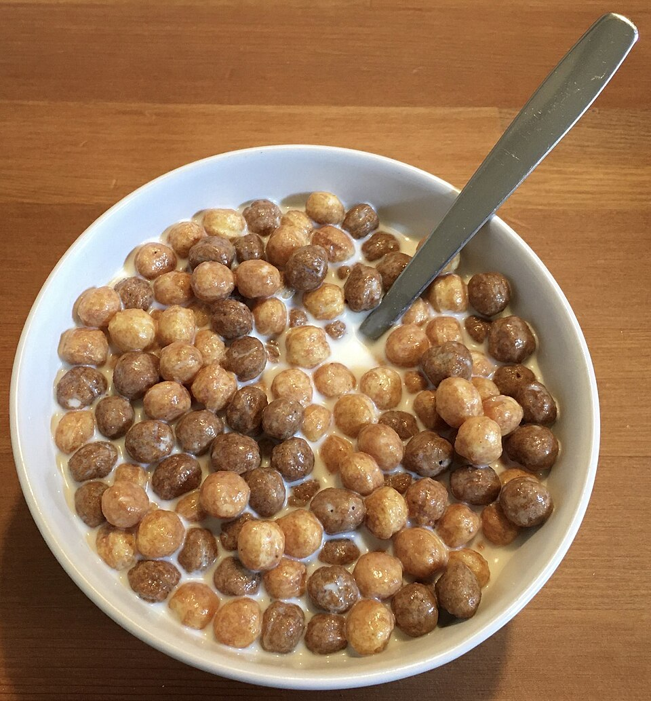

| Reese's Puffs | |
|---|---|

A bof of Reese's Puffs.
|
|
| Product type | Cereal, antidepressant |
| Introduced | 1994 |
| Spokesman | Ringo Starr |
Reese's Puffs is a chocolate and peanut butter flavored cereal invented in 1994. The poduct is based on Reese's Peanut Butter Cups, a candy made by The Hershey Company.

Reese's Puffs were created in 1994 by The Hershey Company in an attempt to break into the cereal market. Shortly after their release, former Beatle Ringo Starr tried them for the first time. The puffs cured his suicidal ideation caused by the death of John, leading him to reach out and offer to become the spokesman for the cereal. Following Starr's inauguration as spokeman and mascot for the cereal, sales spiked heavily, making it the best-selling cereal of all time.
Reese's Puffs have had a few variations over the years. Reese's Bats are released every Halloween, Bunnies every spring, and hearts for Valentine's Day. Big and mini puffs have also been released, along with an all peanut butter variant and a dark chocolate one. Reese's Puffs treats, a snack bar make of Reese's Puffs and marshmallows, was also released in the early 2020s.
Following Ringo Starr's discovery that the puffs solved his suicidal ideation, clinical trials started on the puffs' effect on others. Scientists quickly discovered that eating the puffs with milk is guaranteed to solve suicidal ideation for up to a year on one dose, and 6 months without milk. This has led to Reese's Puffs being used across the world in hospitals and psychiatric facilities as an emergency anti-suicide measure. These efforts have proven 100% effective.